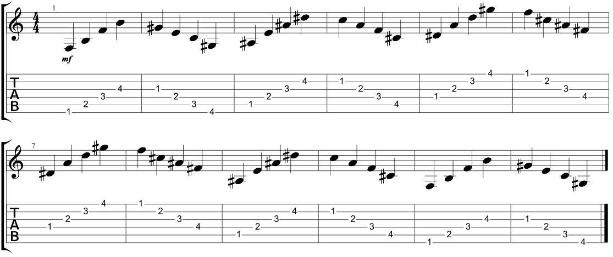

Finger Exercises
Spider Finger Exercise
This exercise is great for improving your overall finger dexterity. It is important to keep things slow at the beginning, as playing to fast will encourage bad habits that are hard to break. Speed will come eventually, the most important thing is that you are playing accurately. In this exercise your fingers mimic the movement of a spider as you play up and down the strings. Practicing this in short sessions whenever you get the chance will help improve your playing exponentially. Doing this exercise for as little as 2 minutes can really improve your playing.